14 第十三课 ggplot绘图
14.1 ggplot的作者和原理
ggplot2的作者Hadley Wickham

Hadely对ggplot2的图形总结：“一张图就是从数据到几何对象(geometric object, 缩写为geom, 包括点、线、条形等)的图形属性(aesthetic attributes, 缩写为aes, 包括颜色、形状、大小等)的一个映射(mapping)。此外,图形中还可能包含数据的统计变换(statistical transformation, 缩写为stats), 最后绘制在某个特定的坐标系(coordinate system, 缩写为coord)中, 而分面(facet,指将绘图窗口划分为若干个子窗口)则可以用来生成数据中不同子集的图形。”

14.2 ggplot的特点
采用图层设计方式，图层之间的叠加用+，后面的图层在前面图层上方。
将表征数据和图形细节分开，能快速将图形表现出来。
扩展包丰富，有专门调整颜色、字体和主题等的辅助包。
Code
> library(ggplot2)
> ggplot(mtcars,aes(x=wt, y=mpg))+geom_point()
14.3 ggplot基本语法
数据(变量)映射到几何对象(geom，包括点、线、面等)的图形属性(aes，包括颜色、形状、大小等)。此外还包括数据的统计变换(stats)、绘制特定坐标系(coord)、形成分面(facet)等过程
Plot = data + Aesthetics + Geometry
在ggplot()函数中制定数据集data
在aes()函数中制定图形属性的映射变量，aes()函数必须嵌套在ggplot()中，或嵌套在geom_xxx()函数中
在geom_xxx()函数中制定数据绘图类型
– geom_point（）绘制散点图
– geom_bar（）绘制条形图
– geom_line（）绘制线图
– geom_histogram（）绘制直方图
– geom_boxplot（） 绘制箱式图
– geom_density（）绘制概率密度函数
– geom函数约有40种
- 其他函数可以以图层的方式对图形进行修饰
Code
> ggplot(mtcars, aes(x=wt, y=mpg, color=cyl, size=cyl)) +
+ geom_point() 
Code
> #可以把上面的图分解
> p <-ggplot(mtcars, aes(x=wt, y=mpg, color=cyl, size=cyl))
> p#只生成底图和框架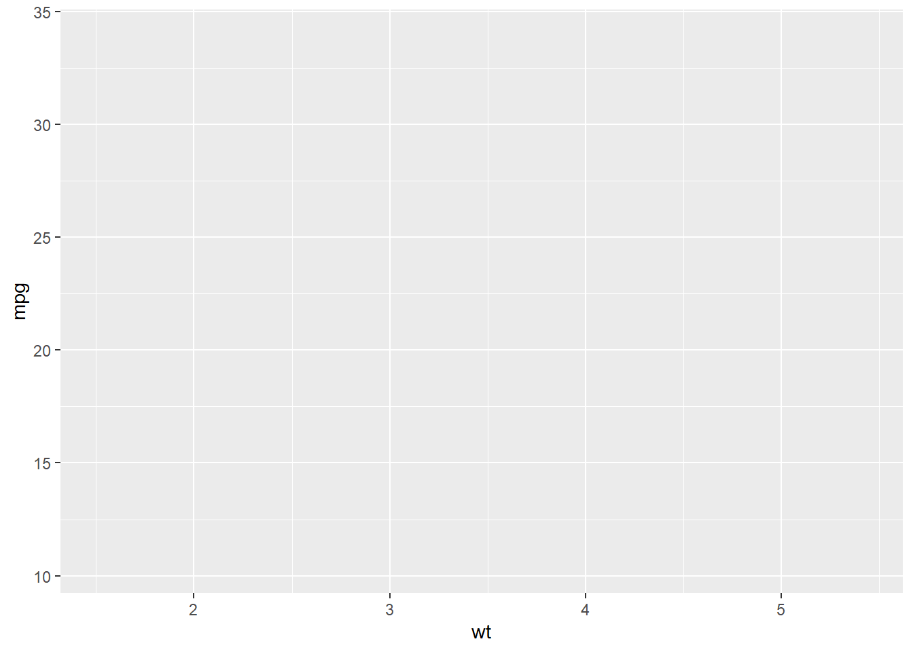
Code
> p+geom_point()#加散点图图层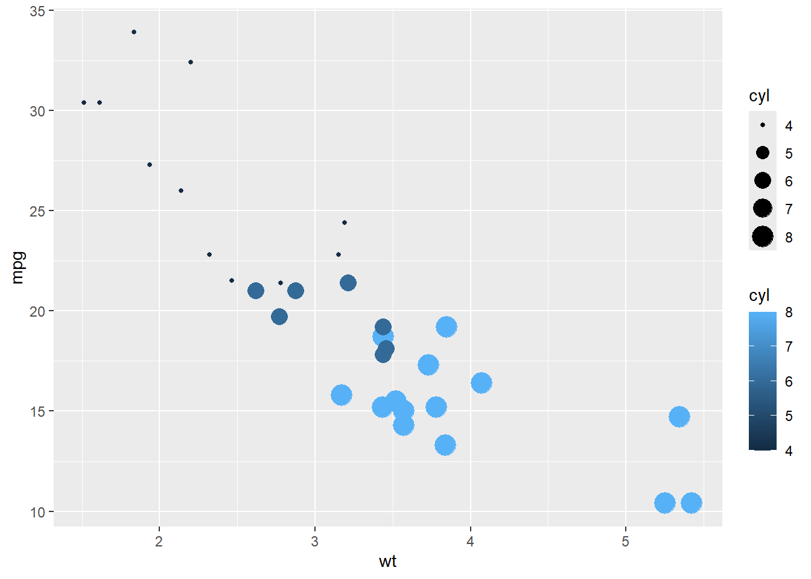
Code
> #其实geom_point()只是图层包装函数，背后隐藏的是layer()
> p+layer(
+ mapping = NULL,
+ data = NULL,
+ geom = "point",
+ stat = "identity",
+ position = "identity"
+ )
layer()图层组成
1.映射（mapping）：绘图中图形属性与数据中的对应关系,在aes() 函数中指定，未制定的话从ggplot()函数继承
2.数据（data）：需要可视化的数据集，多数据集以图层形式叠加
3.几何对象（geom）：如bar条形图，point散点图
4.统计变换（stats）：对数据进行统计变换的方式。To keep the data as is, use the “identity” stat.
5.位置（position）：图形位置的形式，jittering（扰动，避免重合）， stacking（堆积），dodging（并列 ）等
ggplot 其他图形调整组成
标度（scale）：变量以什么形状、颜色映射到图形上
分面（facet）：将数据拆开，进行分层画图
主题（theme）：主题设定，与数据无关的图层可以通过这个函数实现
注释(annotate):对图形增加文字类的注释
14.4 ggplot实战
- Scatterplot 以mtcars数据集为例，绘制wt（横轴）和mpg（纵轴）的散点图，以am变量为颜色选项
选中单击查看
::: {.cell}
```{.r .cell-code}
> ggplot(mtcars, aes(x=wt, y=mpg, color=am))+geom_point()
```
::: {.cell-output-display}
{width=672}
:::
:::
在上面的代码中，颜色用as.factor(am)会有何不同？
比较以下两种绘图颜色的差别及原因
Code
> ggplot(mtcars, aes(x=wt, y=mpg, color="blue"))+geom_point()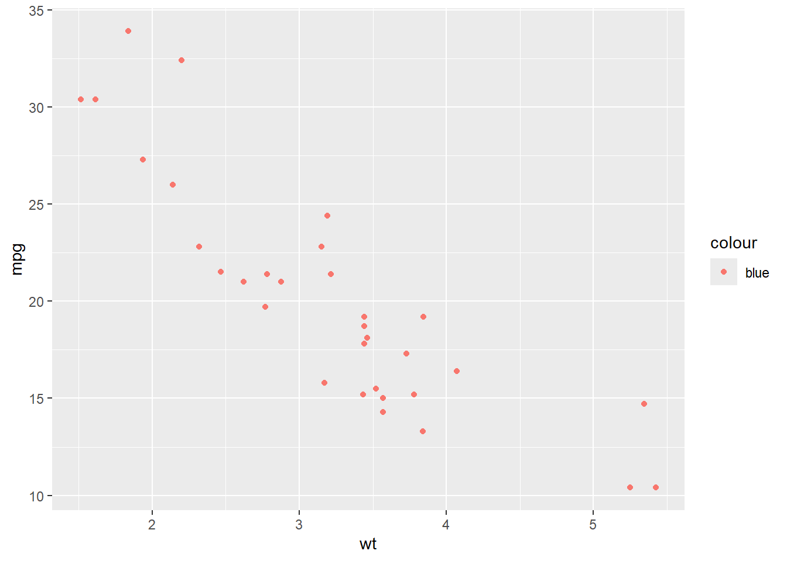
Code
> ggplot(mtcars, aes(x=wt, y=mpg ),color="blue")+geom_point()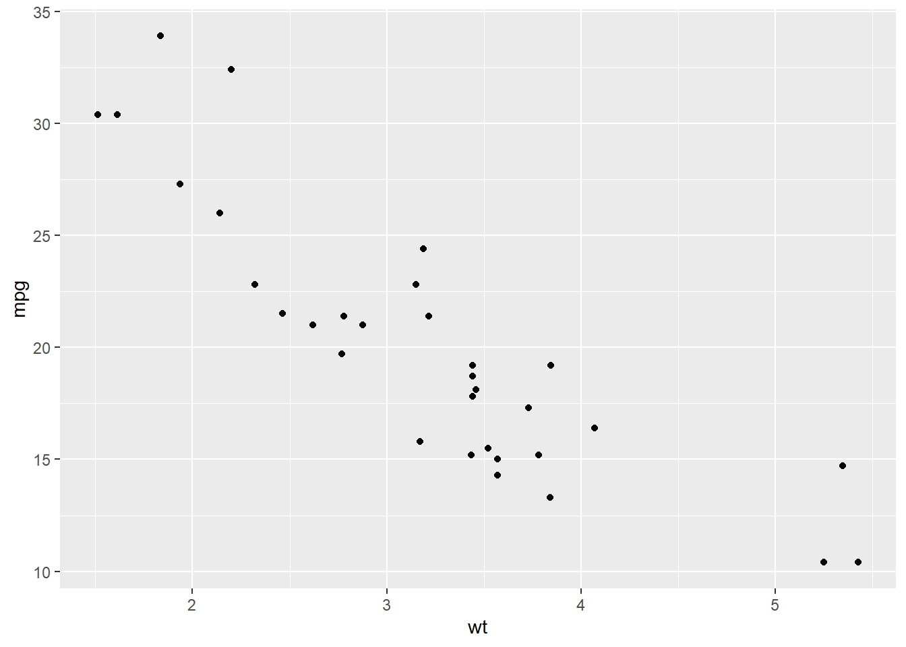
Code
> ggplot(mtcars, aes(x=wt, y=mpg ))+geom_point(color="blue")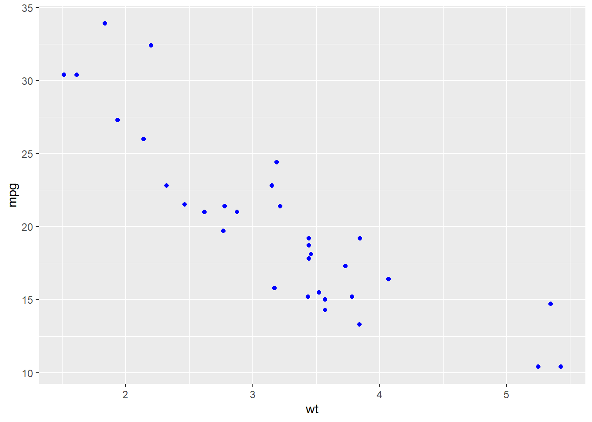
Code
> ggplot(mtcars, aes(x=wt, y=mpg ))+geom_point(aes(color="blue"))
Code
> ggplot(mtcars, aes(x=wt, y=mpg ))+geom_point(aes(color="blue"))+scale_colour_identity()
- boxplot
Code
> ggplot(data=iris,aes(x=Species, y=Sepal.Length)) + geom_boxplot(aes(fill=Species)) 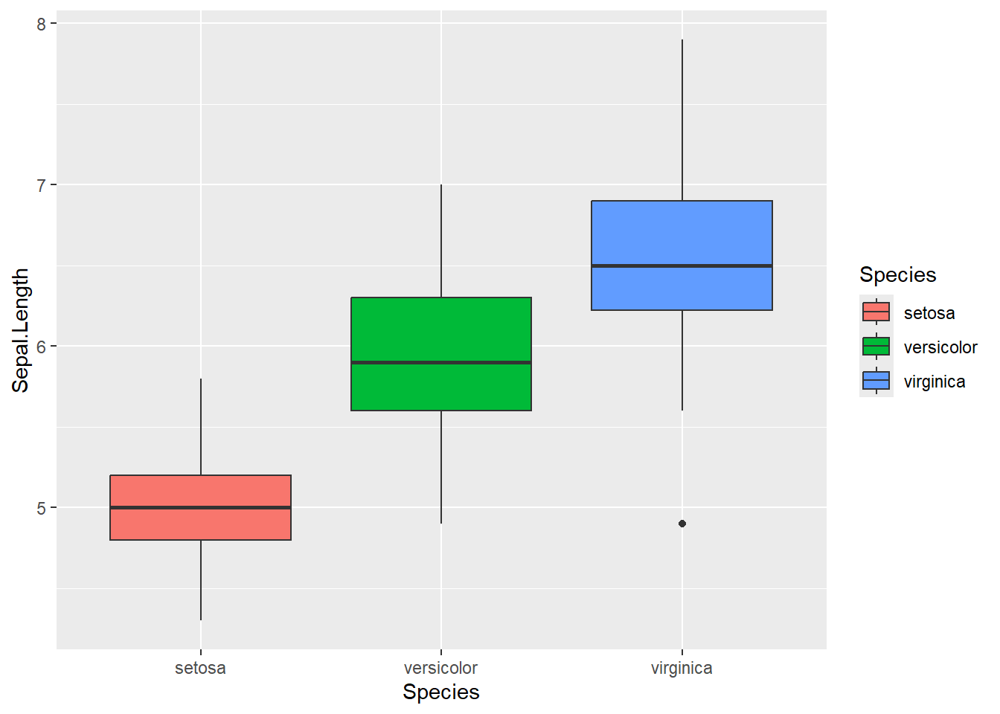
- Histogram
Code
> ggplot(data=iris, aes(x=Sepal.Width)) + geom_histogram(binwidth=0.2, color="black", aes(fill=Species)) 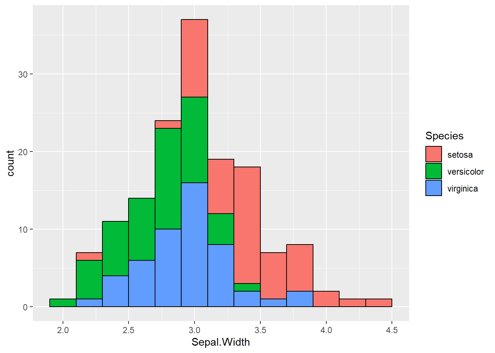
- Barplot
Code
> ggplot(data=iris, aes(x=Species)) + geom_bar() 
- lineplot
Code
> ggplot(data=iris, aes(x=Sepal.Length,y=Sepal.Width,group=Species,color=Species)) + geom_line(aes(linetype=Species)) 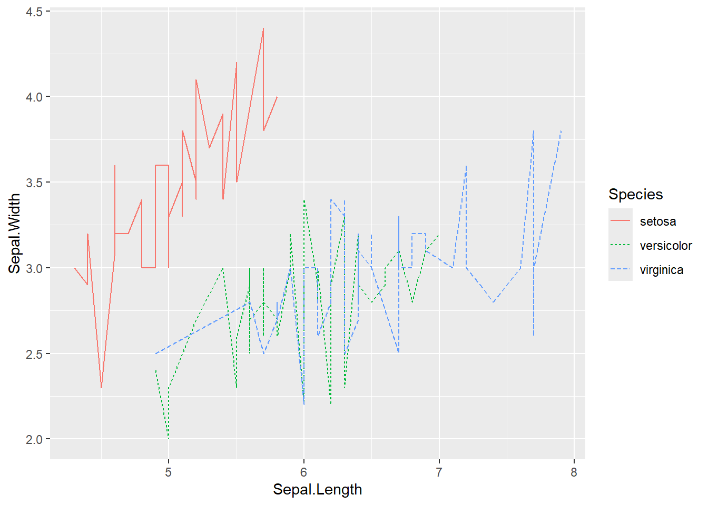
- 图形修饰
Code
> ggplot(data=iris, aes(x=Sepal.Length,y=Sepal.Width,group=Species,color=Species)) + geom_line(aes(linetype=Species), size = 1.2) +
+ geom_point(aes(shape=Species), size = 3) +
+ scale_shape_manual(values=c(6, 5, 4)) +
+ scale_linetype_manual(values=c("dotdash", "solid", "dotted")) +
+ xlab("Sepal Length") + ylab("Sepal Width") + ggtitle("Line plot of sepal length and width")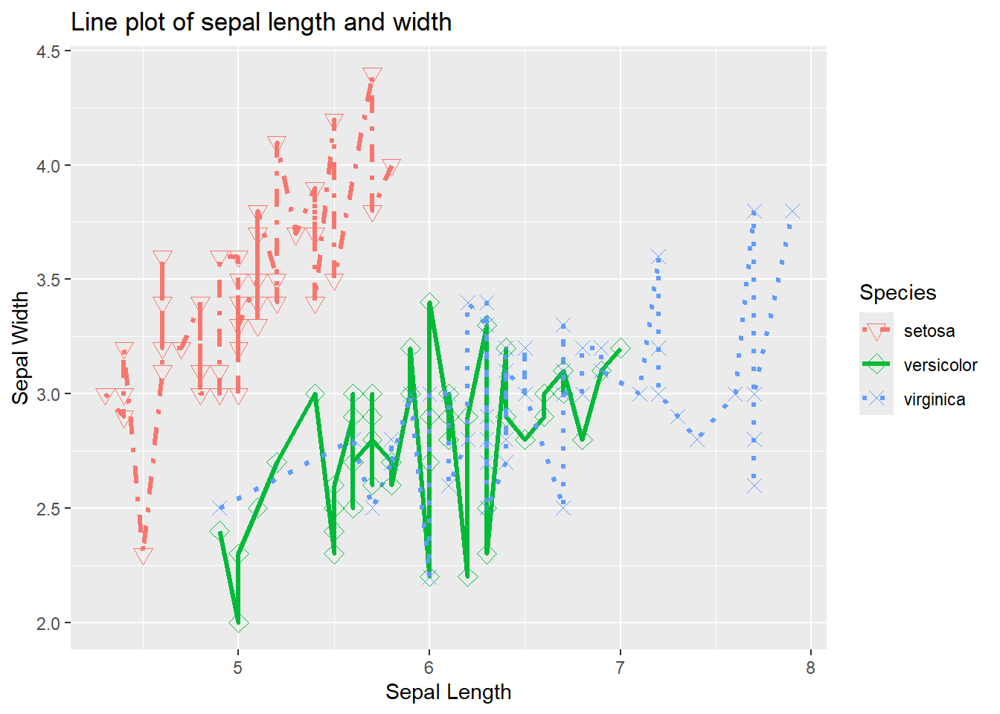
- 分面功能
Code
> ggplot(data=iris, aes(x=Sepal.Length,y=Sepal.Width,color=Species)) +
+ geom_point(aes(shape=Species), size = 3) +
+ facet_wrap(~Species)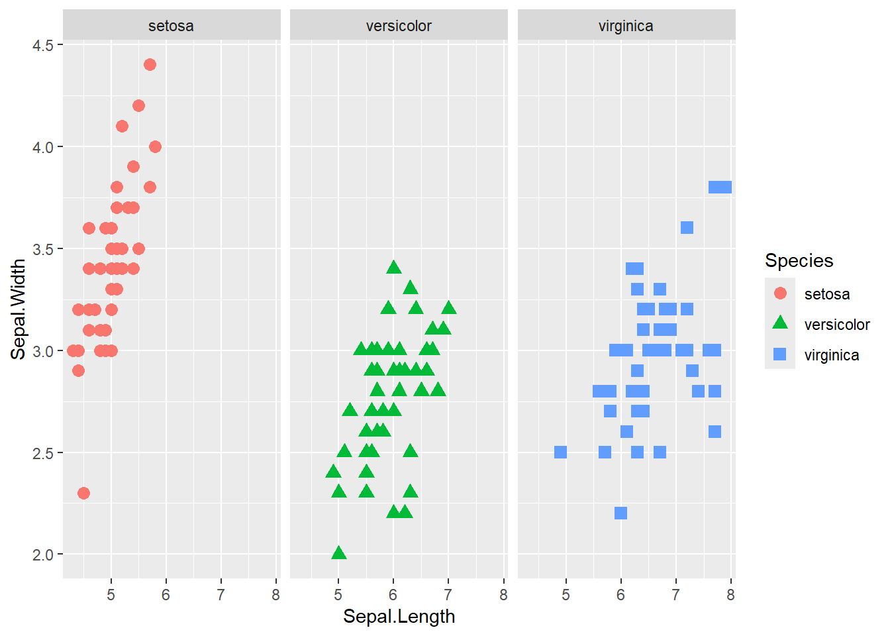
ggplot()的两个分面函数facet_wrap() 和facet_grid()
这两个函数的区别： 
14.5 ggplot统计功能与绘图
- 描述统计图 stat_summary()
stat_summary() operates on unique x or y;stat_summary_bin() operates on binned x or y. They are more flexible versions of stat_bin(): instead of just counting, they can compute any aggregate.
Code
> ggplot(data=iris, aes(x=Species,y=Sepal.Width,color=Species)) +
+ geom_point(size = 3) 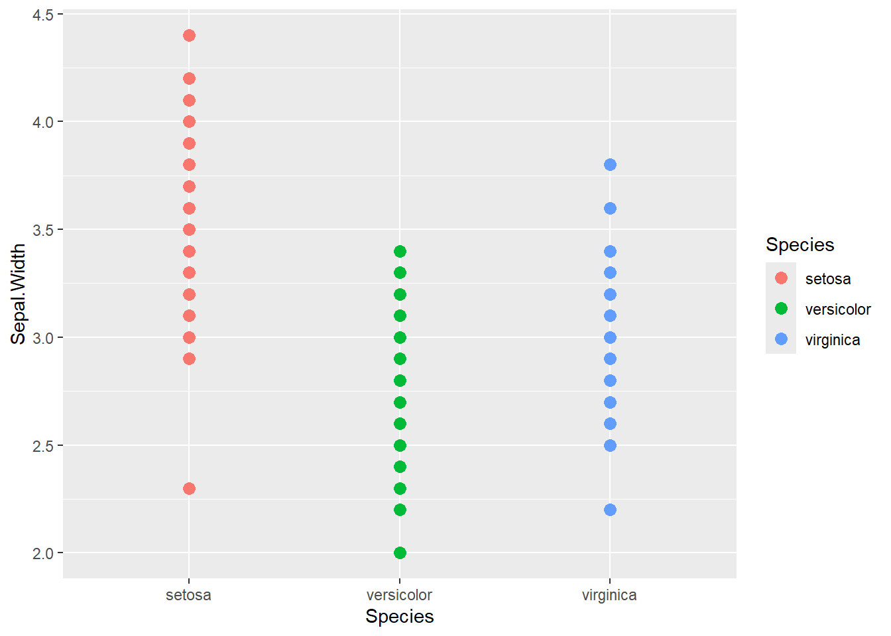
Code
> ggplot(data=iris, aes(x=Species,y=Sepal.Width,color=Species)) +
+ geom_point(position="jitter", size = 3) 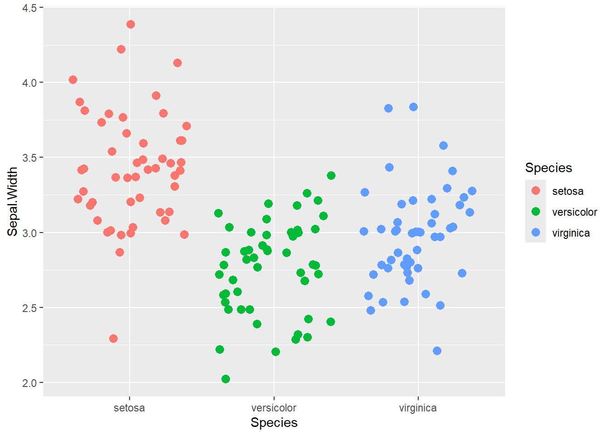
Code
> ggplot(data=iris, aes(x=Species,y=Sepal.Width,color=Species)) +
+ geom_point(position="jitter", size = 3)+
+ stat_summary(
+ fun.y="mean",
+ geom='errorbar',
+ aes(ymin=..y.., ymax=..y..),
+ width=0.6,
+ size=1.5,
+ colour="grey25"
+ ) 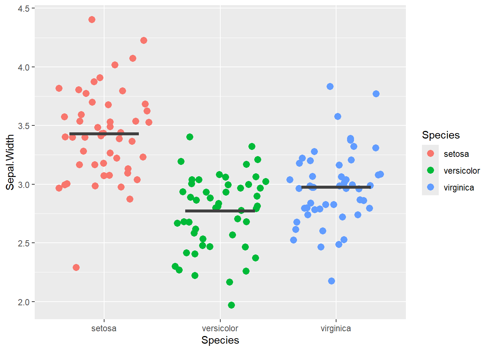
- 直方图 geom_histogram()
Visualise the distribution of a single continuous variable by dividing the x axis into bins and counting the number of observations in each bin. Histograms (geom_histogram) display the count with bars
Code
> ggplot(data=iris, aes(x=Sepal.Width))+ geom_histogram(binwidth=0.2, color="black", fill="blue", aes(y=..density..))#两个.. 是ggplot的标识符，不是ggplot自定义的，而是需要计算的变量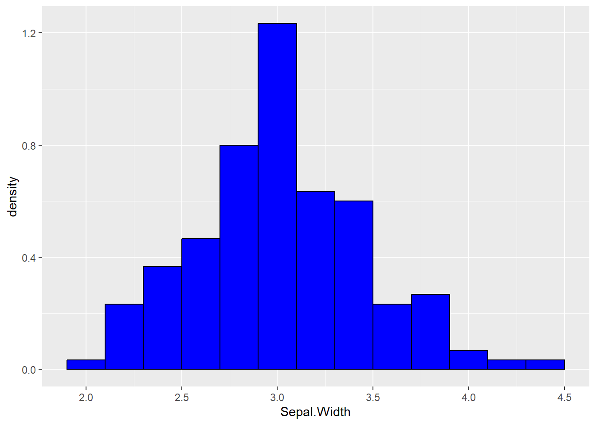
- 分布密度函数 geom_density()
Computes and draws kernel density estimate, which is a smoothed version of the histogram.
Code
> ggplot(data=iris, aes(x=Sepal.Width, fill=Species))+ geom_density(stat="density", alpha=I(0.2))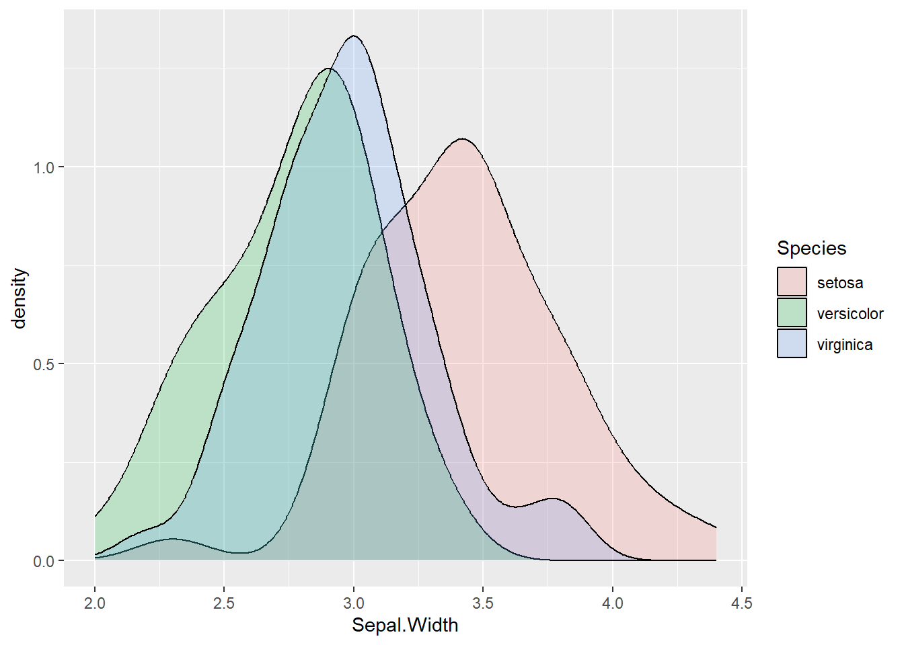
- 散点+平滑 geom_smooth()
Aids the eye in seeing patterns in the presence of overplotting. geom_smooth() and stat_smooth() are effectively aliases: they both use the same arguments. Use stat_smooth() if you want to display the results with a non-standard geom.
Code
> ggplot(data=iris, aes(x=Sepal.Length, y=Sepal.Width, color=Species)) + geom_point(aes(shape=Species), size=1.5) +geom_smooth(method="lm")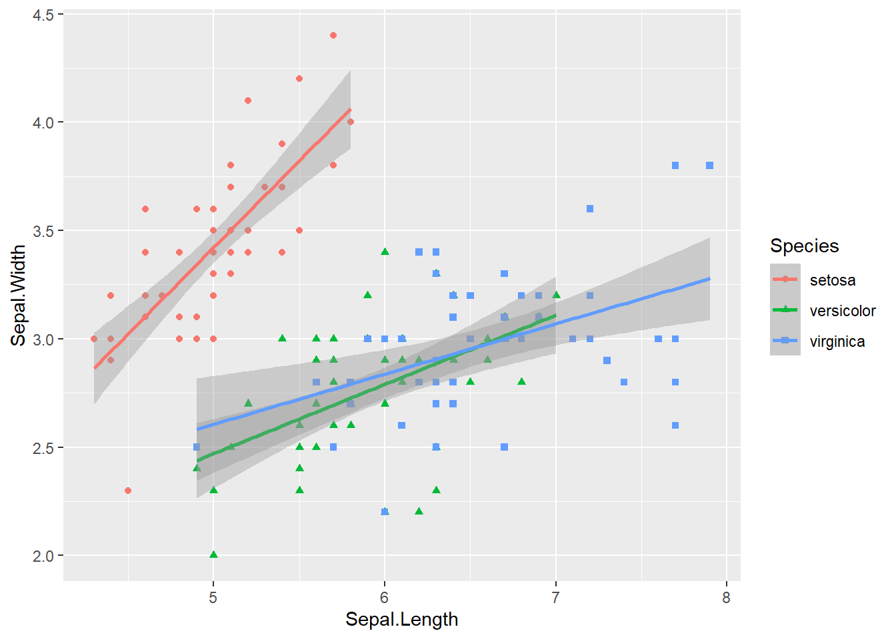
Code
> ggplot(data=iris, aes(x=Sepal.Length, y=Sepal.Width, color=Species)) + geom_point(aes(shape=Species), size=1.5) +geom_smooth(method="loess")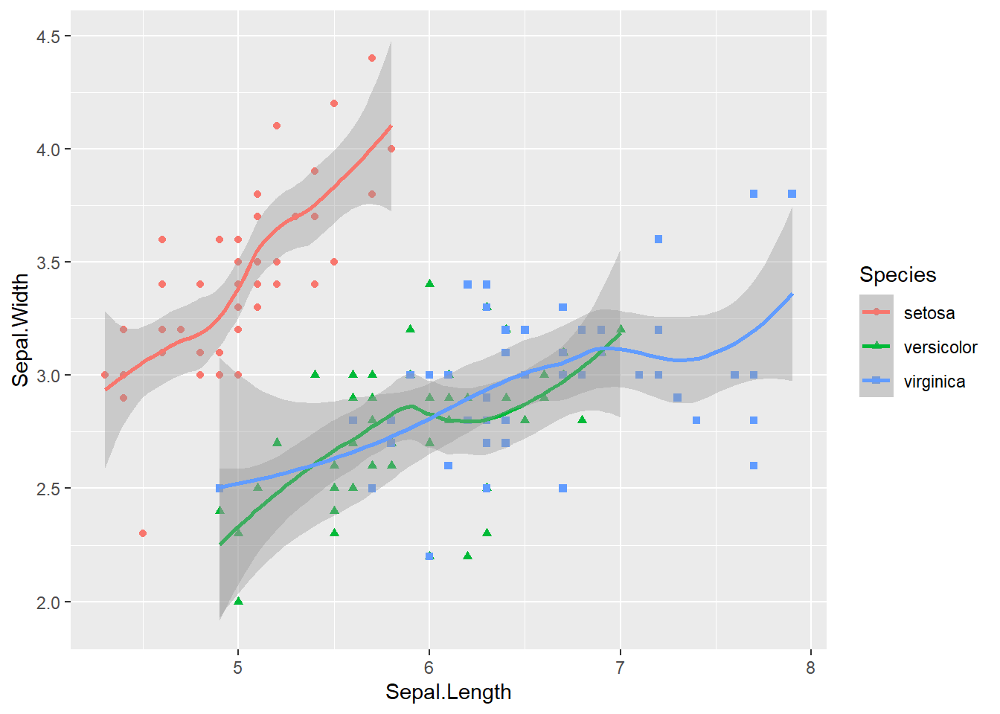
14.6 期末考核问题
(1)R语言 最早始于哪一年？ 1993-1995
(2)R语言为什么命名为R语言？ R 是新西兰的罗斯.伊哈卡 (Ross Ihaka)和罗伯特.金特尔曼（Robert Gentleman）基于S语言开发，二人名字都有R，所以命名为R语言
(3)R语言是基于什么语言开发的？
见上一条(4)R语言的两大基本功能是？ 统计计算与图形输出
(5)Rstudio和R的关系是？ Rstudio是R的一个IDE，由于比较好用功能强大，所以用R语言的都一般都会装这个
(6)以tidyverse包为例，列举R两种安装包的方式（截图和语言描述都可以）？ 代码安装和Rstudio安装
(7)R语言有哪些数据类型？ 双整型（double）、整型（integer）、字符型（character）、逻辑型（logical）、复数类型（complex）
(8)R语言的数据结构类型有哪些？ 向量（Atomic Vectors）、列表（List）、矩阵（Matrix）、数组（Array）、数据框（data.frame）
(9)R中的向量是什么？ 同一类型数据的集合
(10)各列举三条R语言的优势和劣势 优点：免费 灵活 新 缺点：需要编程；经常出错不稳定；学习成本高
(11)实际操作–rivers是R自带的北美河流长度信息，请以rivers为例，求出哪一个河流（序号）最长（把代码和结果粘贴下边，不要截图！！）？
Code
which.max(rivers)[1] 68- (12)实际操作–以mtcars为例，除am、cyl和vs之外求所有变量的平均值（把代码和结果粘贴下边，不要截图！！）
Code
names(mtcars) [1] "mpg" "cyl" "disp" "hp" "drat" "wt" "qsec" "vs" "am" "gear"
[11] "carb"Code
apply(mtcars[,-c(2,8,9)], 2, mean) mpg disp hp drat wt qsec gear
20.090625 230.721875 146.687500 3.596563 3.217250 17.848750 3.687500
carb
2.812500 - (13)实际操作–以mtcars为例，分别用plot和ggplot函数绘制mpg与disp关系的散点图（把代码和结果粘贴下边，不要截图！！）
Code
attach(mtcars)
plot(mpg,disp)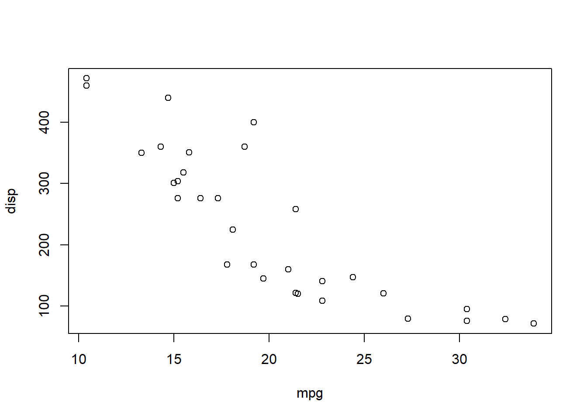
Code
library(ggplot2)
ggplot(mtcars,aes(mpg,disp))+geom_point()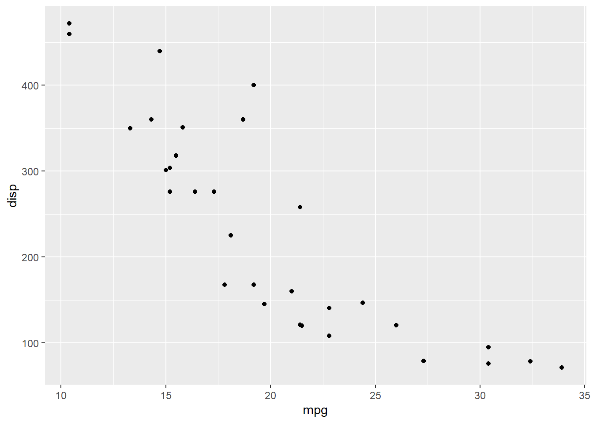
- (14)实际操作–随机生成100个均值为1，标准差为2的正态随机数（把代码和结果粘贴下边，不要截图！！）
Code
rnorm(100,1,2) [1] 2.49183789 1.81698961 0.30225875 1.98697079 -0.38402306 3.04875797
[7] 1.93505818 0.17999401 -1.90105234 -3.04019401 1.84518295 3.75974609
[13] -2.18006325 1.50510887 2.71582122 0.84283330 1.03801013 2.47122348
[19] -0.56118693 -2.24826445 1.39543979 2.10796821 -0.07375914 0.10104502
[25] 0.64886667 0.83587412 3.35983908 0.54466061 0.71195695 1.60723440
[31] 3.57589337 1.45149110 2.30322898 -0.09533813 2.35845314 2.66576101
[37] 0.77453109 0.56394828 2.10650219 0.38219137 5.53436476 3.89867444
[43] -1.58773326 1.53911196 2.02610577 1.49279300 -0.92958443 2.58063955
[49] -0.09660387 1.76472667 2.78553587 0.32508191 0.78655318 7.11995696
[55] 3.84842247 -1.05824742 0.73200059 -0.43087531 3.40990135 -0.86895235
[61] 3.10329620 -1.57420518 3.11530842 -1.67423090 -0.67089933 2.09780125
[67] 1.04705733 4.69953276 -1.58004481 -2.06722387 1.52463924 0.58153900
[73] 0.04508273 1.94025384 0.63153560 -0.23991889 -0.40962754 3.14381772
[79] 0.26711478 4.61308050 -0.89643837 1.18786232 -1.02165982 -0.76963224
[85] 4.02261000 1.98206016 -1.31771707 -0.70561281 3.85780585 1.14029502
[91] 0.23262251 -0.08748209 -2.63832583 2.53213923 0.39427288 0.73720374
[97] 2.05919747 0.28752121 4.99334849 -0.12164105- (15)实际操作–利用ggplot并以mtcars数据集为例，演示如何生成箱式图（把代码和结果粘贴下边，不要截图！！）
Code
ggplot(mtcars,aes(as.factor(am),mpg))+geom_boxplot()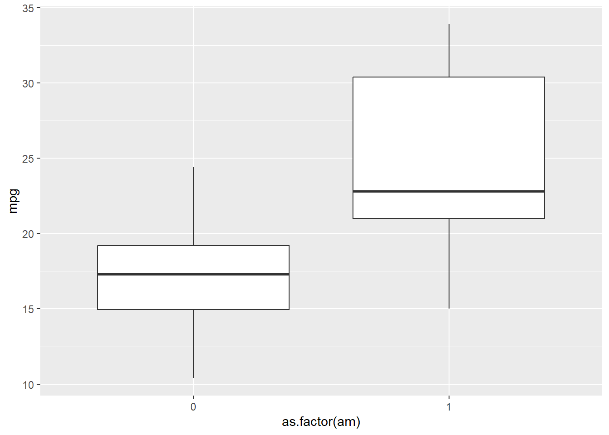
- (16)实际操作–利用for循环实现从1开始到100的累加运算（把代码和结果粘贴下边，不要截图！！）
Code
j=0
for (i in 1:100) {
j=j+i
}
j[1] 5050- (17)实际操作–利用t检验检验mtcars中手动挡和自动挡的车mpg是否有显著性差异（把代码和结果粘贴下边，不要截图！！）
Code
t.test(mpg~am,data=mtcars)
Welch Two Sample t-test
data: mpg by am
t = -3.7671, df = 18.332, p-value = 0.001374
alternative hypothesis: true difference in means between group 0 and group 1 is not equal to 0
95 percent confidence interval:
-11.280194 -3.209684
sample estimates:
mean in group 0 mean in group 1
17.14737 24.39231 - (18)实际操作–以diamonds数据为例，按照color和clarity分类计算平均价格（把代码和结果粘贴下边，不要截图！！）
Code
library(tidyverse)
diamonds %>% group_by(color,clarity) %>% summarise(mean(price))# A tibble: 56 × 3
# Groups: color [7]
color clarity `mean(price)`
<ord> <ord> <dbl>
1 D I1 3863.
2 D SI2 3931.
3 D SI1 2976.
4 D VS2 2587.
5 D VS1 3030.
6 D VVS2 3351.
7 D VVS1 2948.
8 D IF 8307.
9 E I1 3488.
10 E SI2 4174.
# ℹ 46 more rows- (19)实际操作–利用R求下面矩阵行列式的值，并计算该矩阵的逆
\[ \begin{bmatrix} 6~~2 \\ 2~~5\\ \end{bmatrix} \]
Code
A <- matrix(c(6,2,2,5),nrow = 2)
det(A)[1] 26Code
solve(A) [,1] [,2]
[1,] 0.19230769 -0.07692308
[2,] -0.07692308 0.23076923（把代码和结果粘贴下边，不要截图！！）
- (20)实际操作–利用R求下面矩阵的单位特征向量和特征根,并验证两个特征值对应的特征向量是正交的
\[ \begin{bmatrix} 6~~ 2 \\ 2~~ 5\\ \end{bmatrix} \]
（把代码和结果粘贴下边，不要截图！！）
Code
ev <- eigen(A)
vct <- ev$vectors
vct%*%t(vct) [,1] [,2]
[1,] 1 0
[2,] 0 1Code
t(vct)%*%vct [,1] [,2]
[1,] 1 0
[2,] 0 1各种图形的参考https://www.r-graph-gallery.com/